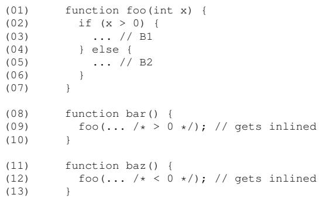
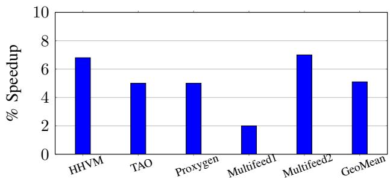

BOLT: A Practical Binary Optimizer for Data Centers and Beyond 通俗讲解¶
0. 整体创新点通俗解读¶
痛点直击 (The "Why")
- 传统的 Feedback-Directed Optimization (FDO) 或 Profile-Guided Optimization (PGO) 需要在编译时就注入性能分析数据。但现代超大规模的数据中心应用（如 Facebook 的 HHVM）根本没法用“插桩”（instrumentation）的方式去收集 profile，因为开销太大，会拖垮生产环境。
- 即便退而求其次，用 sample-based profiling（比如 Linux
perf），把在二进制上采样的数据“倒推”回编译器的中间表示（IR），这个过程也极不准确。就像论文里 Figure 2 展示的那样：一个函数被内联到多个地方后，每个调用点的最佳代码布局可能完全不同，但编译器层面看到的只是一个模糊的、平均化的 profile，导致它无法做出最优决策。 - 因此，即使你用了最先进的 LTO (Link-Time Optimization) 和 FDO，生成的二进制依然存在大量“前端瓶颈”（front-end bound）——指令缓存（I-cache）、指令 TLB（I-TLB）和分支预测器压力巨大，因为代码布局不够好。
通俗比方 (The Analogy)
想象你要重新规划一个超大物流仓库（你的程序二进制）里的货架摆放。
- 传统编译器 FDO 的做法：它拿着一份从无人机（采样器）那里拿到的、模糊不清的热力图（profile），试图在设计仓库蓝图（源代码/IR）的时候就把最畅销的商品（hot code）放在离出货口最近的地方。但它不知道，等仓库真正建好后（链接、优化完成），内部通道和货架结构已经变了，那份蓝图上的规划很可能完全失效。
- BOLT 的做法：它等仓库完全建好、甚至已经开始运营之后，再派一个巡视员（sample-based profiler）进去，精确记录下哪些货架被访问得最多、工人（CPU）走哪些路最频繁。然后，它直接在现场（二进制层面）动手，把热门商品挪到一起，把冷门商品打包扔到仓库角落。它不需要懂建筑图纸（源代码），它只关心最终建成的实体仓库（binary）里的真实人流。

Fig. 2: Example showing a challenge in mapping binary-level events back to higher-level code representations.
关键一招 (The "How")
作者并没有试图去改进编译器或链接器，而是巧妙地将整个优化流程推迟到了最后一步——在最终的、可执行的二进制文件上直接进行重写。
- BOLT 的核心洞察是：Profile 数据是在二进制层面采集的，那么就在二进制层面使用它，避免任何信息损失。这解决了 AutoFDO 等技术中“profile retrofiting”（将 profile 映射回 IR）这个根本性的精度问题。
- 它构建了一个基于 LLVM 的强大二进制重写框架，能够：
- 精确地反汇编并重建每个函数的 Control-Flow Graph (CFG)。
- 利用高精度的采样数据（尤其是 Intel 的 LBR, Last Branch Record）来获取准确的分支和调用频率。
- 执行一系列针对代码布局的优化，其中最关键的是：
- Basic Block Reordering: 将最热的执行路径变成“fall-through”，极大减少分支跳转。
- Function Reordering (via HFSort): 根据调用图将经常一起被调用的函数在内存中紧密排列，提升 I-TLB 和 I-cache 效率。
- Function Splitting: 将函数中的冷代码块剥离出来，放到单独的区域，让热代码区域更加紧凑。
- 这个思路的精妙之处在于，它承认了编译器和链接器的局限性，并选择在一个信息最完整、最准确的阶段（post-link）来解决一个特定的、对数据中心应用至关重要的问题（code layout）。它不是要取代 LTO/FDO，而是作为它们的完美互补。正如论文结论所说：“using both approaches leads to the highest efficiency”。
最终效果非常显著：对于像 Clang 和 GCC 这样的大型编译器，在已经应用了 LTO 和 FDO 的基础上，BOLT 依然能带来高达 15.0% 和 20.4% 的性能提升。

Fig. 5: Performance improvements from BOLT for our set of Facebook data-center workloads.
1. 基于LLVM的二进制重写架构 (ELI5)¶
痛点直击 (The "Why") - 传统的二进制优化器（比如老旧的Spike、FDPR）通常是为特定架构（如Alpha、Itanium）从零开始打造的“一次性”工具。这导致两个巨大痛点： - 移植成本极高：想把一个x86的优化器搬到ARM上，几乎等于重写一遍，因为底层的指令集解析、代码生成逻辑全部要换。 - 健壮性差：自己造轮子去解析复杂的x86-64指令流，很容易出错，尤其面对手写的汇编、复杂的控制流或链接器生成的特殊代码时，工具可能直接崩溃或产生错误结果。
通俗比方 (The Analogy) - 这就像你要在世界各地开连锁餐厅。老办法是每到一个新城市，就找一帮本地工匠，从伐木烧砖开始，完全手工盖一座新厨房。这不仅慢，而且每个厨房的布局、设备接口都不一样，你很难保证菜品质量和运营效率。 - BOLT的做法则是，直接采用一套成熟的、模块化的预制厨房系统（LLVM）。这套系统已经在全球各种建筑规范（CPU架构）下验证过，并且所有灶台（反汇编器）、冰箱（代码模型）、管道（重定位处理）都使用标准接口。你只需要根据当地菜单（优化目标）调整一下内部配置，就能快速、可靠地开业。
关键一招 (The "How") - 作者并没有从头构建一个脆弱的、专用的二进制分析引擎，而是巧妙地将整个优化流程嫁接到了LLVM这个成熟的编译器基础设施之上。具体来说，他们利用了LLVM的几个核心能力来解决上述痛点：
- 利用LLVM的MC层进行精准解析与生成：
- LLVM的
MCInst（Machine Instruction）提供了一个与架构无关的、精确的机器指令中间表示。BOLT通过LLVM的TableGen生成的反汇编器，将原始二进制字节码安全、准确地转换成MCInst序列。 -
在优化完成后，再用LLVM的汇编器将修改后的
MCInst序列重新编码回目标架构的机器码。这确保了代码生成的正确性和可靠性。 -
借力LLVM的多架构支持实现轻松移植：
- 因为LLVM本身就支持x86, ARM, AArch64等多种后端，BOLT的核心逻辑（如CFG构建、优化Pass调度）可以完全与架构解耦。
-
论文中提到，为ARM架构开发一个原型只花了不到一个月，这充分证明了该架构的巨大优势。你不需要成为所有CPU的专家，只需要理解LLVM的通用接口。
-
复用LLVM的链接与重定位基础设施：
- 二进制重写最棘手的问题之一是如何处理代码移动后产生的地址引用失效。BOLT利用了LLVM的运行时动态链接器（最初为JIT设计）来解析和修复函数间及基本块间的引用，极大地简化了重写过程的复杂性。

Fig. 3: Diagram showing BOLT’s binary rewriting pipeline.
这个架构图清晰地展示了BOLT如何将LLVM作为其“引擎”。它把复杂的、容易出错的底层细节（Disassembly/Assembly, Relocations）外包给了经过工业级验证的LLVM，而自己则专注于实现高层次的、与架构无关的优化逻辑（如基于Profile的代码布局）。这是一种典型的“站在巨人肩膀上”的工程智慧。
2. 精确的样本分析驱动代码布局 (ELI5)¶
痛点直击 (The "Why") - 传统的 Feedback-Driven Optimization (FDO) 需要将运行时收集的性能剖析数据（profile）映射回编译器的中间表示（IR）。这个过程非常“难受”，因为： - 编译器在生成最终二进制文件前，会进行大量的优化（如 inlining, loop unrolling），导致源代码/IR和最终机器码之间存在巨大的鸿沟。 - 当你试图把在二进制层面采样的热点信息（比如某个分支的跳转频率）塞回高层IR时，信息会严重失真。就像论文图2展示的那样，一个被内联了两次的函数，其内部的分支在二进制里是两个独立的实例，但在IR里还是一个。强行合并统计，就会得到错误的50/50概率，而实际上每个实例都可能是99/1或1/99。 - 这种不准确的剖析数据用在对数据精度极其敏感的代码布局（Code Layout）上，轻则优化无效，重则反而降低性能。
通俗比方 (The Analogy) - 想象你要重新规划一个大型物流仓库（CPU的指令缓存和取指单元）的货物（指令）摆放。你的目标是让最常被一起取用的货物放在相邻的货架上，减少叉车（取指单元）来回奔波的时间。 - 传统FDO的做法是：先看一份几个月前、基于原始设计图纸（源代码/IR）制定的货物清单，然后根据这份可能已经过时的清单去指挥工人（编译器）重新摆放。但仓库早已经过多次改造（编译优化），图纸和现实对不上了。 - BOLT的做法则是：直接派一个观察员（sample-based profiler）站在仓库现场（binary level），用高清摄像头（Intel LBR）精确记录下叉车每一次真实的取货路径和频率。然后，它自己动手（post-link optimizer），直接在现场挪动货物，完全无视那张过时的图纸。因为它看到的就是真相，所以能做出最精准的布局决策。
关键一招 (The "How") - 作者并没有尝试去修复那个脆弱的“从二进制到IR”的映射过程，而是巧妙地绕开了整个编译器前端。 - 具体来说，BOLT做了一个根本性的扭转：将优化的战场从编译期/链接期，直接搬到了二进制文件本身。 - 它利用 perf 等工具，在生产环境中对未经修改的、已发布的二进制程序进行采样。特别是，它重度依赖 Intel LBR (Last Branch Record)，这个硬件特性可以精确记录下最近32次taken branches的完整轨迹。 - 有了LBR提供的精确边（edge）级剖析数据，BOLT就能在二进制层面直接、无损地重建出每个函数的真实控制流图（CFG）及其执行频率。 - 基于这个高保真的CFG，BOLT就能安全地执行那些对剖析数据精度要求极高的优化，比如： - 基本块重排序（Basic Block Reordering）：确保最热的执行路径是连续的fall-through，极大减少taken branches的数量。 - 函数重排序（Function Reordering）：使用 HFSort 算法，将经常被先后调用的函数在内存中紧密排列，改善 I-TLB 和 I-cache 的局部性。 - 这个逻辑转换的核心在于：与其费力地把现场情报翻译成总部能听懂的模糊报告，不如直接授权现场指挥官全权处理。这使得BOLT的优化与编译器的FDO/LTO形成了完美的互补，而不是简单的替代。
Fig. 2: Example showing a challenge in mapping binary-level events back to higher-level code representations.

Fig. 10: Real example of poor code layout produced by the Clang compiler (compiling itself) even with PGO. Block .LFT680413 is cold (Exec Count: 0), but it is placed between two hot blocks connected by a forward taken branch.
这种策略的有效性在论文的评估中得到了充分体现。例如，在Clang编译器上，即使在其已经应用了PGO+LTO的情况下，BOLT依然能通过更精确的布局，将taken branches的数量再减少44.3%。
| 优化层级 | Taken Branches 减少量 (vs Baseline) |
|---|---|
| Clang Baseline | 0% |
| Clang + PGO+LTO | ~40% |
| Clang + PGO+LTO + BOLT | 69.8% |
这组数据清晰地证明了，在二进制层面利用精确剖析数据进行代码布局，能够挖掘出传统编译期优化无法触及的巨大性能潜力。
3. 混合函数发现与控制流图重建 (ELI5)¶
痛点直击
- 传统的 静态二进制分析 面临一个根本性难题：精确地找到函数边界并重建控制流图（CFG）几乎是不可能的。因为编译器和链接器在生成最终二进制时，会进行大量优化（如内联、尾调用优化、代码布局重排），导致原始的函数结构信息严重丢失。
- 如果只依赖 ELF符号表，对于那些被标记为
static的本地函数或者手写的汇编代码，符号信息往往是缺失或不完整的。 - 如果只依赖 DWARF调试信息（特别是Call Frame Information, CFI），很多生产环境下的发布版二进制为了减小体积会直接剥离这些信息，而且手写汇编也常常不包含CFI。
- 这就造成了一个尴尬局面：没有准确的CFG，后续所有基于控制流的优化（比如热/冷块重排、间接调用优化）都成了无源之水，甚至可能因为错误的CFG而引入崩溃。
通俗比方
- 想象你要修复一栋老旧公寓楼的电路。你手头有两份不完整的图纸：
- 第一份是住户名单（ELF符号表），它告诉你每户人家（函数）的大致门牌号（起始地址），但没告诉你每户内部房间（基本块）怎么连通，而且有些租客（本地函数）根本没登记。
- 第二份是建筑结构蓝图（DWARF CFI），它详细画出了承重墙和房梁（栈帧变化点），能帮你推断出房间的边界，但这张图在装修时被房东撕掉了一大半。
- BOLT的做法不是赌其中一张图是对的，而是同时拿着这两张残缺的图，再亲自去楼里走一遍（反汇编指令流）。它看到一堵承重墙（CFI指令），就确认这是一个房间的起点；它看到门牌号（符号表），就确认这是一户人家的入口。通过交叉验证，它就能在脑海中重建出最接近真实的完整户型图（CFG）。
关键一招
- BOLT并没有试图发明一种全新的、能100%解决二进制分析不可判定问题的方法，而是采用了一种务实且稳健的混合策略：
- 第一步：函数发现（Function Discovery）。它优先使用 ELF符号表 来获取已知函数的名称和起始地址。对于符号表中缺失的部分，它会尝试利用 DWARF CFI 中记录的函数边界信息作为补充。
- 第二步：保守反汇编与CFG构建。对于每一个被识别出的函数，BOLT会从其入口点开始进行线性扫描反汇编。在此过程中，它会特别关注两个关键信号：
- 分支指令：所有
call,jmp,jcc等指令的目标地址会被记录下来，用于构建基本块之间的边。 - CFI指令：这些指令（如
.cfi_def_cfa_offset）被用作锚点，帮助BOLT确认哪些指令序列属于同一个逻辑上的“栈帧上下文”，这对于处理异常处理（如C++throw）至关重要，确保landing pad能被正确识别和关联。
- 分支指令：所有
- 第三步：失败安全（Fail-Safe）。如果在反汇编或CFG构建过程中遇到任何不确定性（例如，无法解析一个跳转目标，或者发现数据被误认为代码），BOLT会立即放弃对该函数的优化，将其原封不动地保留在二进制中。这种“宁可不做，也不做错”的策略保证了优化后的二进制绝对安全可靠。
Fig. 3: Diagram showing BOLT’s binary rewriting pipeline.
- 正是这种混合方法，让BOLT能够处理像 HHVM 这样包含大量C++、手写汇编和复杂异常处理的真实世界大型二进制文件，并为其构建出足够精确的内部表示，从而支撑起后续一系列强大的优化，如图4所示的带有异常处理信息的CFG。

Fig. 4: Partial CFG dump for a function with C++ exceptions.
4. 多阶段优化流水线 (ELI5)¶
痛点直击 (The "Why")
- 传统的编译器优化（如 FDO/PGO 和 LTO）虽然强大，但它们工作在 源码或中间表示（IR）层面。当程序最终被链接成一个巨大的二进制文件后，编译器就“撒手不管”了。
- 这带来一个核心矛盾：Profile数据是在最终的二进制上采集的（比如通过
perf），但编译器却需要把这个数据“反向映射”回它早已优化过、甚至内联（inlined）过的IR上。这个映射过程会丢失大量精度，尤其是在处理跨模块内联或复杂的控制流时，导致代码布局（code layout）决策失误。 - 更难受的是，现代数据中心应用动辄上百MB的代码，I-cache 和 I-TLB 的压力巨大。哪怕编译器做了函数重排，函数内部的基本块（basic block）布局如果一团糟——热路径上夹杂着冷代码——依然会造成严重的性能浪费。而编译器在IR层面很难精确感知到这种二进制级别的局部性问题。
通俗比方 (The Analogy)
- 想象你是一位城市规划师（编译器），根据一份粗略的人口流动报告（Profile数据），在图纸上（IR）规划了一个城市的主干道和社区（函数和基本块）。但等城市真的建好后（生成二进制），你发现实际的人流（CPU指令流）和你的图纸有偏差，因为施工队（链接器）为了省事，在某些街区里把热门商铺和废弃仓库混在一起建了。
- BOLT就像是一个城市建成后的精细化改造团队。他们不推倒重建（不用重新编译），而是直接拿着高精度的实时人流热力图（基于 LBR 的采样数据），走进每一条街道（反汇编二进制），把热门商铺（hot basic blocks）集中到步行街上，把废弃仓库（cold code）搬到郊区，并且重新规划社区入口（函数重排），让整个城市的交通效率（CPU前端性能）达到最优。
关键一招 (The "How")
BOLT的核心洞察是：与其费力地把二进制世界的精准数据“翻译”回编译器世界的模糊语言，不如直接在二进制世界里解决问题。它的多阶段流水线正是围绕这一思想构建的：
- 第一招：精准感知。BOLT利用 LLVM 的强大后端能力，对整个二进制进行精确反汇编，并结合 DWARF 调试信息和 LBR 采样数据，构建出每个函数真实、准确的控制流图（CFG）和执行频率。这解决了数据映射失真的根本问题。
- 第二招：微观重塑。在函数内部，BOLT执行 reorder and split hot/cold basic blocks。它识别出最热的执行路径，并确保这条路径上的分支尽可能少地跳转（fall-through），同时将冷代码物理拆分出去。这直接缓解了 I-cache 压力和分支预测器的压力。
- 第三招：宏观调度。在函数之间，BOLT应用 HFSort 算法，根据调用图的热度对所有函数进行全局重排。这极大地改善了 I-TLB 的命中率，因为频繁互相调用的函数会被紧密地放置在一起。
- 第四招：协同增效。流水线中还包含其他能放大布局优化效果的“助攻”操作：
- 间接调用提升 (ICP) 将运行时高频的间接调用转换为直接调用，不仅加速了调用本身，也为后续的内联和布局优化创造了条件。
- PLT调用优化 减少了通过过程链接表（PLT）调用的开销。
- Identical Code Folding (ICF) 在二进制层面进一步合并完全相同的代码段，这是对链接器ICF的有力补充。
- 第五招：无痕更新。所有这些激进的代码移动和修改，都伴随着对 DWARF 调试信息和 C++异常处理（landing pad）元数据的同步更新，确保程序在优化后依然能正确调试和处理异常，这对生产环境至关重要。

TABLE I: Sequence of transformations applied by BOLT’s optimization pipeline.
这张表格清晰地展示了BOLT优化流水线的顺序。可以看到，从最初的指令精简（如去除rep ret），到核心的布局优化（基本块重排、函数重排），再到最后的分支修复（fixup），整个流程环环相扣，共同服务于提升代码局部性这一终极目标。最终效果是惊人的：即使在已经经过 FDO+LTO 优化的顶尖编译器（如Clang）上，BOLT依然能榨取出高达 15.0% 的额外性能。

Fig. 8: Breakdown of improvements on different metrics for HHVM (higher is better). ICF refers to identical code folding. Optimizations are always added on top of the previous bar, i.e., +BB reordering has function reordering, huge pages and basic block reordering all turned on.

Fig. 9: Breakdown of improvements on different metrics for Clang (higher is better). ICF refers to identical code folding. Optimizations are always added on top of the previous bar, i.e., +ICF includes BB reordering and ICF both turned on.
这两张图的性能分解更是直观地证明了，基本块重排（BB reordering）和函数重排（Function reordering）是BOLT性能收益的绝对大头，完美印证了其设计哲学：在二进制层面做最精准的代码布局，是解决大型应用前端瓶颈的终极利器。
5. 重定位模式下的全程序重排 (ELI5)¶
痛点直击 (The "Why") - 传统的 post-link optimizer（如早期的 BOLT 初始设计）只能在现有函数边界内做文章，比如调整函数内部的基本块顺序。这就像你只能在每个房间里重新摆放家具，但无法改变房间在整个大楼里的位置。 - 这种限制导致一个根本性问题：全局代码局部性（global code locality）。即使每个函数内部都很“热”，但如果频繁互相调用的函数在二进制文件里相隔十万八千里，CPU 的 I-cache 和 I-TLB 依然会频繁失效，性能瓶颈无法根除。 - 链接器（Linker）虽然知道所有符号的位置，但它通常不会把重定位（relocation）信息写入最终的可执行文件。没有这些信息，任何 post-link 工具都像是在黑暗中摸索，不敢轻易移动函数，因为一旦移动，所有指向该函数的指针和跳转指令都会失效，程序直接崩溃。
通俗比方 (The Analogy)
- 想象你要优化一个巨大的物流仓库（你的程序二进制文件）。货物（函数）被堆放在不同的货架上。初始布局是随意的。
- 你拿到了一份详细的“货物关联图”（profile data），知道哪些货物总是被一起取用（hot call paths）。
- 在“非重定位模式”下，你只能在每个货架内部整理货物，让常用的放前面。但在“重定位模式”下，你拿到了仓库的“完整建筑蓝图和所有货架的承重/连接图纸”（即 --emit-relocs 生成的重定位表）。
- 现在，你不仅可以在货架内部整理，还可以安全地拆掉隔墙、移动整个货架，甚至把一个大货架拆成两半，把常用的部分移到黄金区域，不常用的扔到仓库角落。这才是真正的全局优化。
关键一招 (The "How")
- 作者并没有试图自己去解析和重建整个二进制文件中错综复杂的地址引用关系——那几乎是不可能完成的任务，且极易出错。
- 而是巧妙地利用了链接器本身的能力。通过要求链接器在生成可执行文件时带上 --emit-relocs 选项，链接器会将它在链接过程中解决的所有地址修正信息（即重定位表）一并保存下来。
- BOLT 在 Relocations Mode 下，首先读取这份现成的、权威的重定位表。这份表明确告诉 BOLT：“在地址 X 处，有一个对符号 Y 的引用，类型是 Z”。
- 有了这张“地图”，BOLT 就能获得对二进制内容的完全控制权：
- 它可以任意重新排列所有函数在 .text 段中的物理位置。
- 它可以安全地进行函数体拆分（function splitting），将冷代码块挪走，只留下紧凑的热代码路径。
- 在完成所有重排和修改后，BOLT 只需根据新的函数地址，遍历重定位表，一次性修正所有相关的引用即可。这从根本上解决了 post-link 代码重排的安全性和可行性问题。
Fig. 3: Diagram showing BOLT’s binary rewriting pipeline.